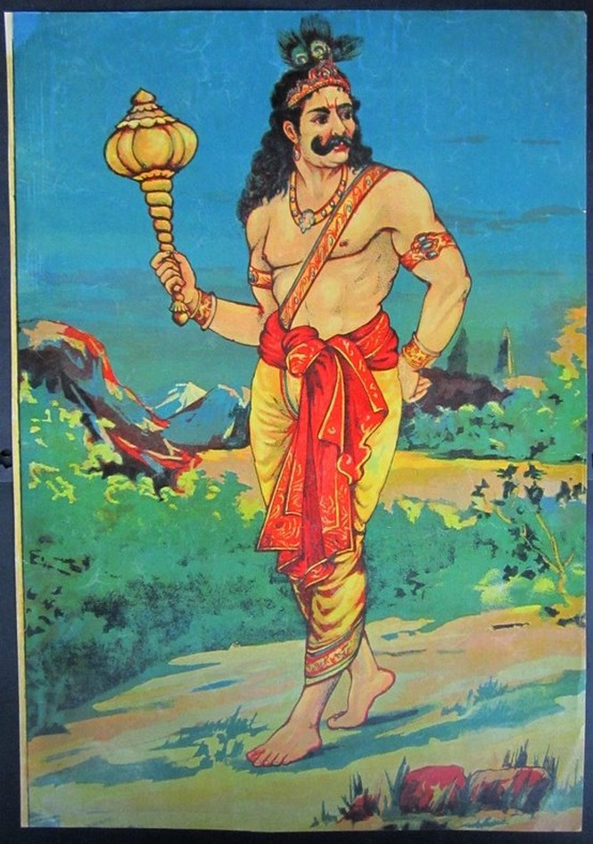

Bhima (Sanskrit: भीम, IAST: Bhīma) is the second among the five Pandavas. The Mahabharata relates many events that portray the might of Bhima. Bhima was born when Vayu, the wind god, granted a son to Kunti and Pandu. After the death of Pandu and Madri, Kunti with her sons stayed in Hastinapura. From his childhood, Bhima had a rivalry with his cousins Kauravas, especially Duryodhana. Duryodhana and his uncle, Shakuni, tried to kill Bhima multiple times. One was by poisoning and throwing Bhima into a river. Bhima was rescued by Nāgas and was given a drink which made him very strong and immune to all venom.
Before the battle had begun, Bhima suggested that Satyaki would lead the Pandava forces, as their general, but Yudhishthira and Arjuna opted for Dhrishtadyumna. The charioteer of Bhima's chariot was Vishoka while the flag bore the image of a gigantic lion in silver with its eyes made of lapis lazuli and his chariot was yoked to horses as black as bears or black antelopes.He wielded a celestial bow named Vayavya- which was given by Vayu, had a massive conch named Paundra and also possessed a huge mace whose strength is equivalent to a hundred thousand maces (presented by Hanuman). Bhima distinguishes himself in battle several times throughout the war
On the 2nd day of the war, he encounters the Kalinga army. He slays Kalinga King Shrutayusha's son Sakradeva, and the two Kalinga general Satya and Satyadeva. He also wounds Ekalavya's son Ketumat. He also defeated and nearly killed Duryodhana in wrestling but failed to kill him due to sunset.
On the 14th day of the war, Bhima defeated Drona by smashing his chariot eleven times and penetrating the Kaurava formation in order to aid Arjuna in his quest to slay Jayadratha. Duryodhana sends a legion of elephants to check Bhima's advance, and Bhima thoroughly destroys the army, leaving a bloody trail of elephant entrails. Durmasena (Dussasana's son), on Duryodhana's order, attempted to stop Bhima. But Bhima in his bloodlust killed Durjaya by hitting him on the head. Bhima also defeated Alambusha on the 14th day. On the same day, Bhima and Karna fought several times. During one such battle, Bhima while chasing Karna encountered Vikarna along with seven Kaurava brothers. They were sent by Duryodhana to protect Karna. In the battle that ensued, Vikarna was killed. Bhima grieved Vikarna's death by praising his noble deeds.[28] Bhima and Karna engaged in duel in which Karna attempted to hide in his chariot when Bhima had the upper hand. Bhima snatched the flagstaff of Karna's chariot, an action that sent Karna into a fit of rage. However both warriors stayed their hand from slaying each other, remembering their respective oaths.
Thirty-one of Duryodhana brothers were also killed by Bhima that day. Bhima slew Bahlika, the King of the Bahlika kingdom, on the night of the fourteenth day.
On the 15th day of the war Bhima attacked Karna in a group but he was quickly defeated and forced to retreat. Bhima's son Ghatotkacha was killed by Karna. Bhima saw the day as a failure as he failed to save his son from Karna. Later, he killed an elephant called Ashwatthama as a plan for killing Drona. Later Bhima along with Satyaki even saved Dhrishtadyumna from Ashwatthama covering his escape. They attacked Ashwatthama together before ultimately retreating from the battlefield after being defeated by Kripi.
Bhima was the only warrior who refused to submit to the invincible Narayanastra weapon launched by Ashwatthama on the 15th day of the war and was quickly defeated by it.
On the 16th day of the war, Karna was appointed to protect Dushasana from the clutches of Bhima. Soon Karna picked up a sword and rushed on to Bhima. Soon they engaged in a sword fight, when Bhima was about to stab Karna defeating him, Karna's son Banasena came in aid of his father. On seeing Banasena, Bhima was angered as his own son Ghatotkacha was slain by Karna. Banasena challenged Bhima and soon attacked Bhima with mace. Bhima brutally but fairly killed Banasena in front of Karna. Bhima killed Banasena by hitting him several times on the head, chest and abdomen. Seeing his son's fate, Karna grabbed a mace and attacked Bhima. Still, in anger, Bhima and Karna fought several times. But Karna eventually won in the end and Bhima retreated. Bhima asked Karna to take his son's body to perform funerals and later fight with Arjuna. Bhima had a fierce fight with Ashwatthama who repeatedly called him a coward because he slew an elephant. They hurled several powerful arrows at each other and the duel was witnessed by Hanuman. The battle was so intense and astonishing that it was being witnessed by all the celestial beings as well, eventually both of them fell unconscious on their respective chariots by the end of that terrifying battle.